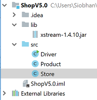
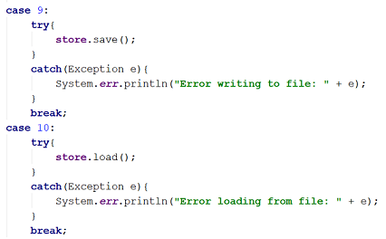
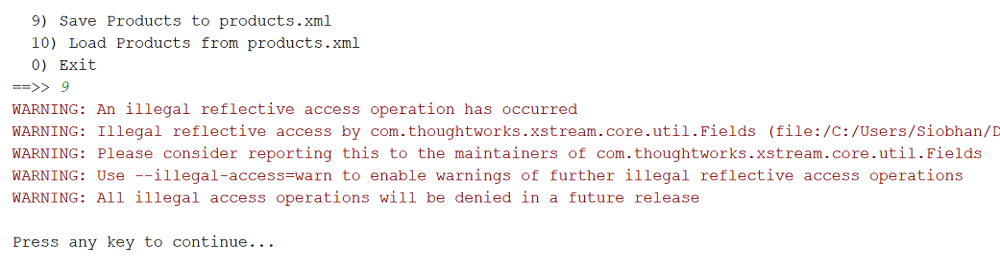

Objectives
XML · Exception Handling · Validate User Input · ShopV5.0 · DVD3.0
Developing Shop V5.0
In this practical, you will create a new project called ShopV5.0, based on ShopV4.0. You will update the Driver, Store and Product classes (linked below) to enable the user to save the products to an XML file and also reload them (see Figure 1 for the updated menu system in ShopV5.0).

Menu Items 9 and 10: Saving and Loading Products
In IntelliJ, create a new project called ShopV5.0.
Copy the following classes into the project:
Setting up the Component for Serializing
Download the following XStream jar file from:
In IntelliJ, on the ShopV5.0 project, right click and select New, followed by Directory. Call the new directory lib. Drag the xstream jar file already downloaded into the lib folder.
Your workspace should look like this:

From File menu, select Project Structure. Click on Libraries. To add a library to your build path, click on the green + :

Select Java and locate your library…click OK (a few times!).
Updating Store Class to serialize and deserialize products
In the Store class, create these two new methods:
@SuppressWarnings("unchecked")
public void load() throws Exception
{
XStream xstream = new XStream(new DomDriver());
ObjectInputStream is = xstream.createObjectInputStream(new FileReader("products.xml"));
products = (ArrayList<Product>) is.readObject();
is.close();
}
public void save() throws Exception
{
XStream xstream = new XStream(new DomDriver());
ObjectOutputStream out = xstream.createObjectOutputStream(new FileWriter("products.xml"));
out.writeObject(products);
out.close();
}You will notice that they don't compile; they are missing some needed packages. Import the following packages at the top of the store class (or use IntelliJ's ALT+Enter to automatically add them):
import java.io.FileReader;
import java.io.FileWriter;
import java.io.ObjectInputStream;
import java.io.ObjectOutputStream;
import com.thoughtworks.xstream.XStream;
import com.thoughtworks.xstream.io.xml.DomDriver;Adding load and save functionality to the menu
In the Driver class, add options 9 and 10 to the printed menu:

In the Driver class, make the following changes to implement case 9 and 10:

Testing the load and store
You should be in a position now to test.
Start your app and create two products e.g.
Please enter the product description: 24 inch monitor
Please enter the product code: 3423
Please enter the product cost: 129.99
Is this product in your current line (y/n): y
Please enter the product description: 14 inch monitor
Please enter the product code: 2322
Please enter the product cost: 109.99
Is this product in your current line (y/n): yNow try option 9 to save your products. Note: if you are using java 9, 10 or 11 you are probably getting a series of red warning messages...the products will be saved, but they will still produce the warnings. The next step will show you how to suppress these warnings.
You should now see a products.xml file appearing in the root of your project.
Open this file and it should contain something similar to this:
<object-stream>
<list>
<Product>
<productName>24 inch monitor</productName>
<productCode>3423</productCode>
<unitCost>129.99</unitCost>
<inCurrentProductLine>true</inCurrentProductLine>
</Product>
<Product>
<productName>14 inch monitor</productName>
<productCode>2322</productCode>
<unitCost>109.99</unitCost>
<inCurrentProductLine>true</inCurrentProductLine>
</Product>
</list>
</object-stream>Exit your application and run it again.
Test option 10 and make sure that the saved products are loaded back into your products ArrayList correctly.
Java 9+ and XStream
This step ONLY applies if you are using JDK9 or later. If you are using JDK8 or lower, you can move onto the next step.
If you are using JDK9 or later , you are more than likely getting the following warning when saving/loading your products:

However, your products.xml file will still be successfully saved and loaded; it is just a warning.
Getting rid of the warning
We can get rid of the warning by passing suppression messages to the VM when we run our application. To do this:
From the Run menu, select Edit Configuratons...*
In the VM Options box, paste in the following VM arguments:
--add-opens java.base/java.util=ALL-UNNAMED
--add-opens java.base/java.lang.reflect=ALL-UNNAMED
--add-opens java.base/java.text=ALL-UNNAMED
--add-opens java.desktop/java.awt.font=ALL-UNNAMED- Click the OK button.
Retesting
Rerun the app and try the save/load again...the warning message should now be suppresed. You may get this one still, but you can ignore it:
Security framework of XStream not initialized, XStream is probably vulnerable.Note that you will need to do this each time you create a new project, as the VM arguments will need to be updated. However, if you copy/clone a project with it in it, the arguments will be retained.
A note on XStream and Java
Java 9 was released in September 2017.
Java 10 was released in March 2018.
Java 11 was released in September 2018.
However, the latest version of XStream (1.4.10) was released in May 2017, before the Java 9 changes. When a new version of XStream is released, we probably won't have to pass these parameters to the VM.
Shop V5.0 - Exceptions
In this step, you will continue working on Shop V5.0.
Adding Exception Handling
In the Driver class, put a try and catch block around each potential read of data that could throw an exception (nextLine() and next() are ok).
Revisit your lecture notes on this topic if you need guidance.
Run your program and test your user input to ensure that your exception handling is correctly implemented e.g. enter String data when a double or int is expected.
DRY code
Did you notice that your code is not DRY (Don't Repeat Yourself)? Did you notice that you were doing the same thing over and over and over again for each readInt and readDouble? e.g. this is the product code read, which is incredibly similiar to the read of an index, etc
int productCode = 0;
boolean goodInput = false; //Loop Control Variable
do {
try {
System.out.print("Enter the product code: ");
productCode = input.nextInt();
goodInput = true;
}
catch (Exception e) {
input.nextLine(); //swallows Scanner bug
System.out.println("Num expected - you entered text");
}
} while (!goodInput);We will now adopt a slightly different approach for reading in the int index number to delete/update from the user and also when reading in the double value in the method printProductsAboveAPrice().
readNextInt(String prompt)
In the Driver, add this method that takes in a prompt (i.e. what you print to the user when asking them for data) and validates the input provided:
private int readNextInt(String prompt) {
do {
var scanner = new Scanner(System.in);
try {
System.out.print(prompt);
return Integer.parseInt(scanner.next());
}
catch (NumberFormatException e) {
System.err.println("\tEnter a number please.");
}
} while (true);
}Then use this method to read in a valid int in the updateProduct method (and also the deleteProduct method) e.g.:
private void updateProduct(){
//list the products
System.out.println(store.listProducts());
if (store.getProducts().size() > 0) {
//only ask the user to choose a product if products exist
int index = readNextInt("Enter the index of the product to update ==> ");
if ((index >= 0) && (index < store.getProducts().size())) {
//if the index is valid, gather new details for each field from the user
///more code hereSave and rerun your app. Test the update and delete code by entering a letter for the index number. It should give you the error message "Enter a number please" and then allow you to enter a new number.
Once you are happy with your app, try to refactor other nextInt reads so that they use this method instead. You are now moving towards having DRY code.
readNextDouble(String prompt)
In the Driver, now add this method that takes in a prompt (i.e. what you print to the user when asking them for data) and validates the input provided:
private double readNextDouble(String prompt) {
do {
var scanner = new Scanner(System.in);
try{
System.out.print(prompt);
return Double.parseDouble(scanner.next());
}
catch (NumberFormatException e) {
System.err.println("\tEnter a number please.");
}
} while (true);
}Then use the method here:
private void printProductsAboveAPrice() {
double price = readNextDouble("View the product costing more than this price: ");
System.out.println(store.listProductsAboveAPrice(price));
}Save and run your project and test these code changes.
When you are happy that the code change is working as expected, try to refactor other nextDouble reads so that they use this method instead. From the data validation perspective, you now have DRY code.
An interim solution
An interim solution to the ShopV5.0 exercise is here should you need in.
In the next step, we will use our new "read" methods to elimiate the annoying Scanner bug from our system. This approach will also make our code much cleaner!
Shop V5.0 - Eliminating the Scanner Bug
In this step, you will continue working on Shop V5.0. Should you need it, the interim solution is here.
In the previous step, we used two new "read" methods to repeatedly ask for valid int and double values. You will notice that each method had it's own local Scanner object called scanner.
Did you notice that these changes meant that we were pressing the enter key a lot to get, say, the menu to redisplay?
The Scanner Bug
There is a bug in the Java Scanner class - a String read is ignored straight after reading an int or a double.
We previously catered for this bug in our code by adding a second input.nextLine() statement after reading an int or a double.
As each of the new "read" methods has its own local Scanner object called scanner, each call of this method will create a brand new scanner for reading every int and double --> this will eliminate the bug.
However, we now have a lot of those extra input.nextLine() statements that are no longer required e.g. in the below code, we have two input.nextLine() statements - we only need to have one now.
private void runMenu() {
int option = mainMenu();
while (option != 0) {
//switch statements
//pause the program so that the user can read what we just printed to the terminal window
System.out.println("\nPress any key to continue...");
input.nextLine();
input.nextLine(); //this second read is required - bug in Scanner class; a String read is ignored straight after reading an int.
//display the main menu again
option = mainMenu();
}
//the user chose option 0, so exit the program
System.out.println("Exiting... bye");
System.exit(0);
}Delete the extra statement and any other extra read statements in your code.
Retest your app. Everything should work as expected and you shouldn't unnecessarily have to press the enter key twice.
Should you need it, the solution without the scanner bug is here.
Shop V5.0 - Utility Class
In this step, you will continue working on Shop V5.0. Should you need it, the solution without the scanner bug is here.
Now that we have eliminated the Scanner bug using these methods, we would like to make these easily available for all projects we develop:
private int readNextInt(String prompt) {
do {
var scanner = new Scanner(System.in);
try {
System.out.print(prompt);
return Integer.parseInt(scanner.next());
}
catch (NumberFormatException e) {
System.err.println("\tEnter a number please.");
}
} while (true);
}
private double readNextDouble(String prompt) {
do {
var scanner = new Scanner(System.in);
try{
System.out.print(prompt);
return Double.parseDouble(scanner.next());
}
catch (NumberFormatException e) {
System.err.println("\tEnter a number please.");
}
} while (true);
}Developing the ScannerInput utility class
Create a new class called ScannerInput.java.
Cut the two methods above from the Driver.java class and paste them into the new ScannerInput.java class.
You will notice that Driver.java no longer compiles as it cannot find/use the methods we moved to ScannerInput.java.
To fix this, first make the ScannerInput methods public and static. You can do this by changing their method signatures like this:
public static int readNextInt(String prompt) {
public static double readNextDouble(String prompt) {Fixing Driver.java
Static means that we don't have to create an object of ScannerInput in order to use these methods...they belong at class level. We can just call the methods using something like this:
ScannerInput.readNextInt("Enter the product code: ");Make this change for all the readNextInt and readNextDouble. Notice that IntelliJ, when you click on the non-compiling method will also suggest this fix (use Alt+Enter as the quick fix for each offending method).
Run your app again and make sure all is working as expected.
Now you can copy this ScannerInput.java file into any project you create from here on in. We will do that with the DVD app in the next step.
Solution
Should you need it, the solution with the ScannerInput class is here.
Menu Driven DVD Specification (Phase 3)
In this practical, you will create a new project and copy in the code from DVDLibraryV2.0. You will then extend the code to allow the user to save the DVDs to an XML file and to load the DVDs from an XML file. We will also bring in our new ScannerInput file to prevent our app from crashing if the user enters invalid numeric data on the console.
Create a new project called DVDLibraryV3.0.
In your Windows Explorer / Mac Finder, copy the src java files from DVDLibraryV2.0 to the src folder in your new project, DVDLibraryV3.0.
NOTE: a copy of the completed DVDLibraryV2.0 is available here should you need it.
Setting up the XML Component for Serializing
Download the following XStream jar file and incorporate it into your DVDLibraryV3.0 project:
Library class
In the Library class:
add a load() method that throws an Exception. This method should read the contents of the dvd.xml file into the ArrayList of DVDs.
add a save() method that throws an Exception. This method should write the contents of the ArrayList of DVDs to the dvd.xml file.
Driver class - Save DVDs
Add a fifth option to the menu: 5) Save DVDs to dvds.xml.
Add a case 5 to the switch statement. Then, within a try and catch block, call the save() method you wrote in the Library class.
Driver class - Load DVDs
Add a sixth option to the menu: 6) Load DVDs from dvds.xml.
Add a case 6 to the switch statement. Then, within a try and catch block, call the load() method you wrote in the Library class.
Test your code
Run the project.
Test option 5 and make sure that your DVDs are stored to an XML file.
You should have a new XML file that looks something like this:
<object-stream>
<list>
<DVD>
<title>The Matrix</title>
</DVD>
<DVD>
<title>Sicario</title>
</DVD>
<DVD>
<title>The Grinch</title>
</DVD>
</list>
</object-stream>Exit your application and run it again.
- Test option 6 and make sure that your DVDs are loaded back into your dvd ArrayList correctly.
ScannerInput
This app is only reading ints (at the moment) and no doubles.
However, it doesn't stop us using our new ScannerInput.java class - we are future proofing our app for when we will be reading doubles!
Copy the ScannerInput.java class that you wrote in ShopV5.0 and paste it into your src folder of the DVDLibraryV3.0 app. For your convenience, we have included it here.
Each time you read an int in the Driver class, replace it with a call to the ScannerInput method instead (just like you did with the Shop app) e.g.
this int read:
System.out.print("Index of dvd to edit ==>");
int index = input.nextInt();becomes:
int index = ScannerInput.readNextInt("Index of dvd to edit ==>");Now your program won't crash if you enter, say, a letter, when the app is expecting an int.
Don't forget to remove any of those dummy reads (i.e. input.nextLine(); ) that we put in to cater for the Scanner bug.
Rerun and test your app to make sure all is ok. Your app should be more robust now and shouldn't crash when invalid numeric data is entered.